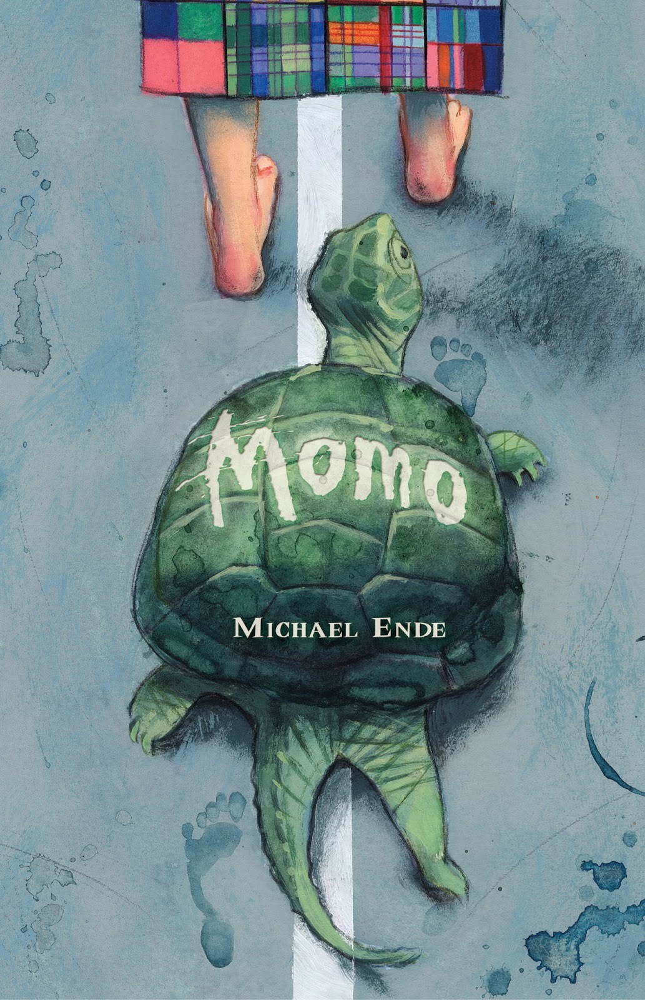

TERROR Y SUSPENSE:
IT- Stephen King

El regreso de un misterioso monstruo tras 25 años se llevará consigo muchas vidas, pero a la vez causará que un grupo de jóvenes entablen una gran amistad.
Stranger Things
Retrocedemos a los años 80, donde en una pequeña ciudad, Indiana, desaparece misteriosamente un niño llamado Will. Esta serie hecha por los hermanos Duffer es perfecta para quien ama el misterio y el suspense.
HISTORIAS POLICIACAS:
La chica Invisible- Blue Jeans
De repente y misteriosamente aparece un cadáver en los vestuarios de un instituto que volverá locos a todos. El cadavér pertenece a Aurora una chica muy misteriosa que no hablaba con nadie. ¿Serás capaz de resolver el caso antes de que este libro te lo resuelva?
Castle:
Castle es una serie en la que un escritor; novio de una policía, ayuda a ella y a su patrulla a resolver casos. También muestra una historia de amor entre los dos protagonistas.
Romance:
Buenos días princesa- Blue Jeans
Este libro trata de un grupo de amigos que sienten que nadie los entiende. En este grupo surgen varias líos amorosos entre ellos. A partir de este libro se ha creado la película: "El Club de los Incomprendidos".
The Kissing Booth:
También llamado "Mi primer beso" esta película se ha ganado ser la película favorita de las adolescentes. Esta película muestra la relacción de amor que tienen la protagonista y el hermano de su mejor amigo, todo empieza al crear un cabina de besos.
Aventura:
El ministerio del tiempo:
El ministerio del tiempo es una serie española. Una patrulla formada por tres personas de diferentes épocas viajan por el tiempo a través para arreglar el pasado; modificado por gente que viaja en el tiempo cambiando el pasado para su propio beneficio.
Momo- Michael Endes
En este libro una chica acompañada de su mascota; una tortuga muy especial, se enfrentan a los "hombres grises."